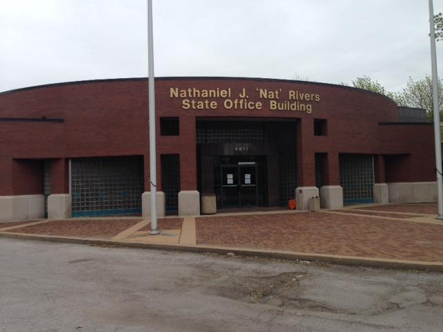

Exposure
The first time I had been opened up to the idea of coding was when my brother earned his Bachelor's in Computer Science. Not that I had any idea what coding was at this point in time, but it would give me some exellent direction when I was in much need of it.
The second time, however, I had actually gotten to see programming up close in my high school's robotics club. Despite being in closer proximty, I was working on the physical aspect of the robot, and not the software controlling it, with only the ability to see others make it. Unfortunately, I wasn't able to attend for long due to transportation to and from school.
Getting My Hands Dirty
Now at this stage in my life I was in college with the goal of graduating with a mechanical engineering degree, and in the first semester of my sophmore year I accidentally signed up for the Computer Science coding class instead of the coding class set up for other majors (much harder and as stated earlier I had no coding experience). The class was rough, but I was finally able to put coding as a skill after learning a fair amount of C++. As it turns out though , this semester also happened to be my last due to financial troubles.
Fresh out of college, and working two jobs, I didn't want to quit my education, and while I didn't enjoy the class itself I was certaintly intriqued by programming. So, I set out onto the internet to teach myself. I went to websites like codecademy, hackerrank, coursera, and free code camp, learning more C++ along with other languages such as html, css, and python.
This was great, and all, but I was currently not working towards any career. I wasn't sure if I wanted to learn a trade, return to college, or change my course for coding. This is when my brother nudged me towards coding saying he knew a few people he worked with who had gone through a program called LaunchCode based here in St. Louis. Spoiler alert, here I am learning more skills in python, html, and soon to be more. I'm glad I have this opportunity, and am excited to see where it will take me.
Credit: Maria Altman, St. Louis Public Radio
Where I Hope It Will Take Me
Currently, my end goal is to end up in cyber security with plan b as a back-end web developer. I think it would be satisfying to have my work help and protect people, however I feel this could also be accomplished with a non-profit organization. I may not know now, but I'm sure it'll be easier to decide once I know a little bit more about coding and how it interacts with jobs.